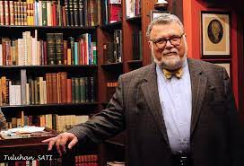

Celal Şengör
Ali Mehmet Celâl Şengör born 24 March 1955 is a Turkish geologist. He is currently on the faculty at Istanbul Technical University, Department of Geological Engineering.After graduating from Robert College, he received his BS 1978, MS 1979 degrees and PhD degree from the State University of New York, Albany in 1982. He also writes a weekly popular science columns in the center-left daily Cumhuriyet. He is married and has one child named Asım Şengör. Professor Şengör is a (foreign) member of The American Philosophical Society, The United States National Academy of Sciences and The Russian Academy of Sciences. He is the second Turkish prominent professor who is elected as a member by the Russian Academy of Sciences after professor ordinarius Mehmet Fuat Köprülü. He was decorated with the coveted Gustav-Steinmann-Medaille —the highest distinction of the Geologische Vereinigung e.V.
Experiences
1978 Co-reviser (for"Geosynclines and Tectonics" section) for the American Geological Institute Glossary of Geology, 2nd edition.
1981 Consultative Committee Member, International Symposium on Qinghai-Xizang (Tibet) Plateau, Beijing, China
1982 Editorial Advisory board Member of the Proceedings of the International Symposium on Earthquake Prediction in the North Anatolian Fault Zone, İstanbul, 31 March – 5 April 1980.
1984 International Advisory Panel Member for Tübitak Natural History Museum and Science and Technology Museum (9–12 December 1984).
1985 Co-convener of the NATO Advanced Study Institute on the Tectonic Evolution of the Tethyan Regions, Istanbul, 28 September – 2 October 1985.
1989 Co-convener of Symposium "Tethyan tectonostratigraphic terrane models tested". EUGV, 20–23 March 1989, Strasbourg
1989 Co-convener of symposium B9: "Stratigraphy and Evolution of the Tethyan Basins" International Geological Congress, Washington, D.C.
1989 Co-organizer of the Royal Society of London Discussion Meeting on Allochthonous Terranes, 8–9 November 1989, London.
1990 Co-organizer of the Eduard-SUESS-Symposium on the Development of Modern Geology and Austrian-Turkish relationships, 10 and 21 April 1990, İstanbul.
1991 Co-convener of Symposium "Subduction processes, strike-slip faulting and continental collision in the Tethyan orogenic assembly" EUG, 24–28 March, Strasbourg.
1992 Co-convener of Symposium I-3-24 "Tectonic evolution of Tethyan and adjacent areas" 29th Int. Geol. Congr., Kyoto, Japan, 28 August 1992
1996 Co-convener of two symposia in the 30th Int. Geol. Congress, Beijing, China, but was unable to attend.
1999 Co-convener of Symposium D06, "Inter-Relations between Palaeo-Tethys and Neotethys in Europe and Asia" EUG 10, 28 March-1 April, Strasbourg, pp. 189 ff.)
2002 Member of Wissenschaftliches Kommitee of Pangeo I, Austria, Erdwissenschaften in Österreich/Earth Sciences in Austria, 28. — 30. 6. 2002, Salzburg.
2009 Chairman of the 62nd Geological Kurultai Congress of Turkey, 13–17 April, Ankara, Turkey
Awards
Bigsby Medaille
Gustav-Steinmann-Medaille
Arthur Holmes Medaille
other
Aziz Sancar
Molecular Biologist
Aziz Sancar
Bilge Demirköz
High Energy Physics
Bilge Demirköz
Afet İnan
History & Sociology
Afet İnan
Gazi Yaşargil
Medical Scientist
Gazi Yaşargil